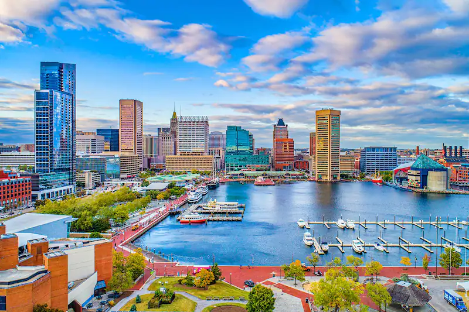
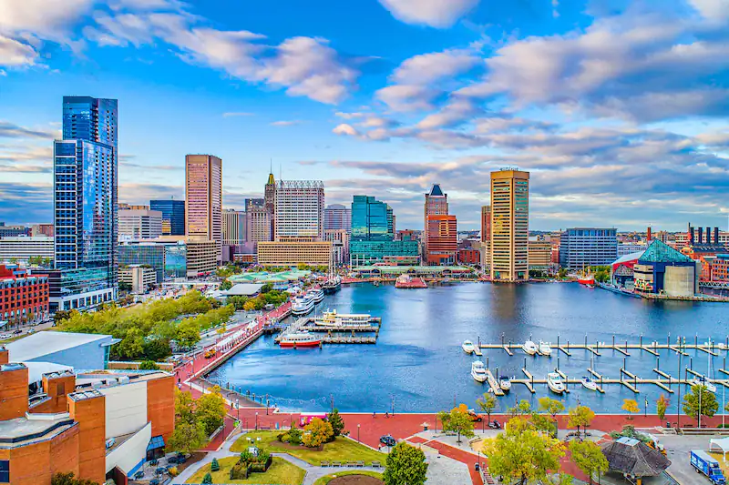

Maryland is a state in the Mid-Atlantic region of the United States.[8][9] The state borders Virginia to its south, West Virginia to its west, Pennsylvania to its north, Delaware to its east, the Atlantic Ocean, and the national capital of Washington, D.C. With a total area of 12,407 square miles (32,130 km2), Maryland is the ninth-smallest state by land area,[10] and its population of 6,177,224 ranks it the 18th-most populous state and the fifth-most densely populated. Maryland's most populous city is Baltimore, and the capital is Annapolis.[11] Occasional nicknames include Old Line State, the Free State, and the Chesapeake Bay State. It is named after Henrietta Maria, the French-born queen of England, Scotland, and Ireland during the 17th century.
George Calvert, 1st Baron Baltimore (1579–1632), sought a charter from King Charles I for the territory between Massachusetts to the north and Virginia to the immediate south.[23] After Baltimore died in April 1632, the charter was granted to his son, Cecilius Calvert, 2nd Baron Baltimore (1605–1675), on June 20, 1632. Officially, the new "Maryland Colony" was named in honor of Henrietta Maria of France, wife of Charles I.[24] Lord Baltimore initially proposed the name "Crescentia", the land of growth or increase, but "the King proposed Terra Mariae [Mary Land], which was concluded on and Inserted in the bill."[17] The original capital of Maryland was St. Mary's City, on the north shore of the Potomac River, and the county surrounding it, the first erected/created in the province,[25] was first called Augusta Carolina, after the King, and later named St. Mary's County
 
